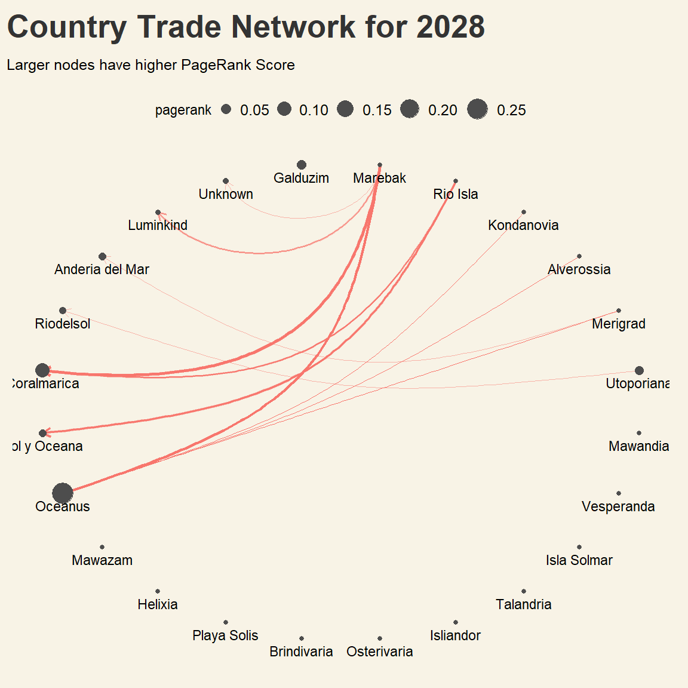

The country of Oceanus has sought FishEye International’s help in identifying companies possibly engaged in illegal, unreported, and unregulated (IUU) fishing. FishEye’s analysts received import/export data for Oceanus’ marine and fishing industries. However, Oceanus has informed FishEye that the data is incomplete. To facilitate their analysis, FishEye transformed the trade data into a knowledge graph. Using this knowledge graph, they hope to understand business relationships, including finding links that will help them stop IUU fishing and protect marine species that are affected by it. FishEye analysts found that node-link diagrams gave them a good high-level overview of the knowledge graph. However, they are now looking for visualizations that provide more detail about patterns for entities in the knowledge graph.
FishEye knows from past experience that companies caught fishing illegally will shut down but will then often start up again under a different name. FishEye wants your help to visualize temporal patterns so they can compare the activities of companies over time to determine if the companies have returned to their nefarious acts.
Project Objectives
This study aims to visualise temporal patterns for individual entities and between entities from trade records. Categorize the types of business relationship patterns you find.
%%{
init: {
'theme': 'base',
'themeVariables': {
'primaryColor': '#93c7c2',
'primaryTextColor': '#3d7670',
'primaryBorderColor': '#3d7670',
'lineColor': '#3d7670',
'secondaryColor': '#3d7670',
'tertiaryColor': '#fff'
}
}
}%%
flowchart LR
A{fa:fa-fish-fins \nOverall\nnetwork} -->|patterns?| B(Year)
A -->|patterns?| C(Month)
B -.- D((?))
C -.- E((?))
Notes: TEU (Twenty-foot Equivalent Unit) is a unit of measurement of shipping volume, used to determine cargo capacity for container ships and terminals
1.1: Splitting data into nodes and edges
code block
mc2_nodes <-as_tibble(mc2$nodes) %>%# reorder dataframe columnsselect(id, rcvcountry, shpcountry)mc2_edges <-as_tibble(mc2$links) %>%# Format arrivaldate as datetype, in year-month formatmutate(arrivaldate =floor_date(as_date(arrivaldate), "month"),# Extract year from date and save as factor columnyear =as_factor(year(arrivaldate))) %>%# Move Source and Target to the frontselect(source, target, hscode, arrivaldate, year, weightkg, volumeteu, valueofgoods_omu, valueofgoodsusd)
# Check for columns with missing valuescolSums(is.na(mc2_nodes))
id rcvcountry shpcountry
0 2909 22359
rcvcountry has 2909 missing values, and shpcountry has 22359 missing values. There are more incomplete records pertaining to origin of the trades. To facilitate analysis, all NA values are replaced by “Unknown”:
valueofgoods_omu column is mostly incomplete. This column will be dropped for the analysis.
code block
# Check for duplicated rowsmc2_edges[duplicated(mc2_edges),]
# A tibble: 355,606 × 9
source target hscode arrivaldate year weightkg volumeteu valueofgoods_omu
<chr> <chr> <chr> <date> <fct> <int> <dbl> <dbl>
1 French C… Mar d… 851629 2028-03-01 2028 20 0 NA
2 French C… Mar d… 851629 2028-05-01 2028 120 0 NA
3 French C… Mar d… 851629 2028-06-01 2028 110 0 NA
4 French C… -1992 852990 2028-01-01 2028 2830 0 NA
5 French C… -1992 852990 2028-01-01 2028 2830 0 NA
6 French C… -1992 852990 2028-01-01 2028 2805 0 NA
7 French C… -1992 852990 2028-01-01 2028 655 0 NA
8 French C… -1992 852990 2028-01-01 2028 1895 0 NA
9 French C… -1992 852990 2028-01-01 2028 1895 0 NA
10 French C… -1992 852990 2028-01-01 2028 2790 0 NA
# ℹ 355,596 more rows
# ℹ 1 more variable: valueofgoodsusd <dbl>
code block
# Save duplicated transactions in a separate tibblemc2_edges_dup <- mc2_edges[duplicated(mc2_edges),]# Leave only unique transactions in original edges tibblemc2_edges <-unique(mc2_edges)
There are 355,606 duplicated transactions. As these may be indicative of possible fishy activity, the duplicated rows are saved separately as mc2_edges_dup.
1.3: Aggregating Variables
code block
mc2_edges_agg <- mc2_edges %>%group_by(source, target, year) %>%# Set weight as number of transactionssummarise(weight =n()) %>%filter(source != target) %>%filter(weight >1) %>%ungroup()
Build a Network graph table
Inner join nodes and edges by overlapping companies
code block
describe(mc2_edges_agg$source)
mc2_edges_agg$source
n missing distinct
288495 0 11325
lowest : -13 -15 -1515 -214 -27
highest: zūn yú N.V. Shipping zūn yú N.V. Transportation zūn yú Plc Holdings ОАО Ltd. Liability Co ОАО S.A. de C.V.
code block
describe(mc2_edges_agg$target)
mc2_edges_agg$target
n missing distinct
288495 0 18277
lowest : -100 -1000 -10003 -10005 -10006
highest: zūn yú N.V. Transportation zūn yú Plc Holdings zūn yú Submarine Incorporated Logistics ОАО Ltd. Liability Co ОАО S.A. de C.V.
mc2_edges source features 11,325 distinct companies, while target has 18277.
code block
describe(mc2_nodes$id)
mc2_nodes$id
n missing distinct
34576 0 34576
lowest : -1 -10 -100 -1000 -10000
highest: zūn yú N.V. Transportation zūn yú Plc Holdings zūn yú Submarine Incorporated Logistics ОАО Ltd. Liability Co ОАО S.A. de C.V.
mc2_nodes has 34,576 distinct company ids
code block
# filter distinct source and target from mc2_edgesdistinct_source <- mc2_edges %>%distinct(source)distinct_target <- mc2_edges %>%distinct(target)# Select only overlapping nodes and distinct companies from edgesnodes_source <-inner_join( mc2_nodes, distinct_source,by =c("id"="source") )nodes_target <-inner_join( mc2_nodes, distinct_target,by =c("id"="target") )# Create new nodes data by combining filtered dataframesmc2_nodes_new <-bind_rows( nodes_source, nodes_target)
code block
# Combine edges and nodes to a graph dataframemc2_graph <-tbl_graph(nodes = mc2_nodes_new,edges = mc2_edges_agg, directed =TRUE)mc2_graph
# A tbl_graph: 43908 nodes and 288495 edges
#
# A directed multigraph with 21423 components
#
# A tibble: 43,908 × 3
id rcvcountry shpcountry
<chr> <chr> <chr>
1 AquaDelight Inc and Son's Oceanus Polarinda
2 Yu gan Sea spray GmbH Industrial Oceanus Oceanus
3 Olas del Mar Worldwide Oceanus Oceanus
4 French Crab S.p.A. Worldwide Utoporiana Kondanovia
5 Panope Limited Liability Company Oceanus Vesperanda
6 hǎi dǎn Corporation Wharf Oceanus Marebak
# ℹ 43,902 more rows
#
# A tibble: 288,495 × 4
from to year weight
<int> <int> <fct> <int>
1 2162 20466 2029 2
2 2162 20466 2030 3
3 2162 586 2030 3
# ℹ 288,492 more rows
Plotting initial network graph
code block
g_full <-ggraph( mc2_graph, # Specify layout options to plot a chord diagramlayout ='linear', circular =TRUE ) +# Vary edge color by yeargeom_edge_arc(aes(color =factor(year)), alpha =0.2 ) +scale_edge_width(range =c(0.1, 5) ) +geom_node_point( linewidth =1)
Warning in geom_node_point(linewidth = 1): Ignoring unknown parameters:
`linewidth`
Warning: Using the `size` aesthetic in this geom was deprecated in ggplot2 3.4.0.
ℹ Please use `linewidth` in the `default_aes` field and elsewhere instead.
nframes and fps adjusted to match transition

Temporal graph
code block
net <-graph_from_data_frame(mc2_graph)plot(net, edge.arrow.size=.4,vertex.label=NA, edge.attr.comb=list(weight="sum","ignore"))